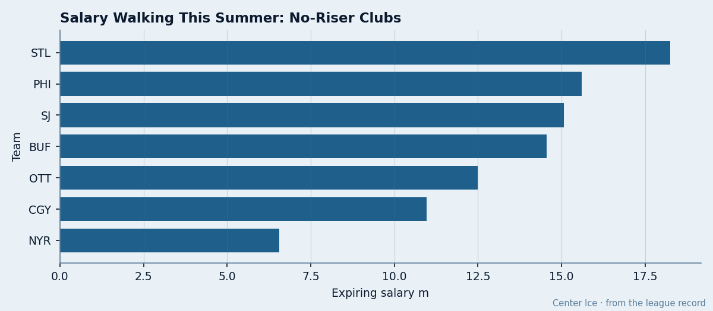

Nobody Got Better: The 7 Clubs the Development Index Found Nothing In, and All 7 Missed
Zero risers on the Index means zero playoff berths. The group pays $0.68M per point against $0.53M for the rest of the league.
 Doug ReimerAnalytics editor, ex-video coach · The Slot Report
Doug ReimerAnalytics editor, ex-video coach · The Slot Report
The Bureau's Development Index has 20 risers at +4 or above in its current edition. Those 20 players wear 14 different sweaters. The other 16 clubs carry at least one player whose overall sits above his base, even if he doesn't crack the published top 20. Only 7 clubs have zero risers at any positive level:  St. Louis Blues,
St. Louis Blues,  Philadelphia Flyers,
Philadelphia Flyers,  San Jose Sharks,
San Jose Sharks,  Buffalo Sabres,
Buffalo Sabres,  Ottawa Senators,
Ottawa Senators,  Calgary Flames,
Calgary Flames,  New York Rangers.
New York Rangers.
All 7 missed the playoffs.
The Index measures current form against a player's Book base. A riser is a man whose overall reads higher today than the Bureau expects for his career trajectory. A club with zero risers is a club where nobody got better all season. Every player on every one of those 7 rosters sits at his base or below it.
The money follows the form, or rather the form follows the money
The 23 clubs with at least one riser produce at $0.53M per point. The 7 with zero risers produce at $0.68M per point. The gap is $0.15M per point. These are not the 7 cheapest rosters in the league, and they are not the 7 most expensive. They are the 7 that bought the least movement.
| Club | Payroll | Points | $/Point | Goals/GP | GA/GP | Club Morale |
|---|---|---|---|---|---|---|
| NYR | $78.14M | 84 | $0.93M | 3.32 | 3.43 | 88.2 |
| PHI | $66.73M | 82 | $0.81M | 3.26 | 3.55 | 92.5 |
| STL | $57.44M | 86 | $0.67M | 2.85 | 3.38 | 97.4 |
| CGY | $45.93M | 70 | $0.66M | 2.79 | 3.38 | 90.3 |
| SJ | $45.39M | 76 | $0.60M | 2.57 | 2.99 | 92.2 |
| OTT | $42.80M | 77 | $0.56M | 3.10 | 3.40 | 88.4 |
| BUF | $44.16M | 84 | $0.53M | 3.15 | 3.63 | 90.9 |

Every one of the 7 has a negative goal differential and finished 9th or worse in its conference. The Index didn't cause these misses, but it is the only Bureau measure that separated the two groups cleanly, and it did so before a single playoff series was played.
What zero risers looks like on a roster
New York Rangers has the most expensive payroll outside  Detroit Red Wings at $78.14M, and not one of its 29 players showed form above his base.
Detroit Red Wings at $78.14M, and not one of its 29 players showed form above his base.  Pavel Bure88 scored 45 points on $9.70M. Bobby Holik managed 14 points on $9.00M.
Pavel Bure88 scored 45 points on $9.70M. Bobby Holik managed 14 points on $9.00M.  Mike Dunham88 played 63 games at a Book grade of 88, which is his base, no more.
Mike Dunham88 played 63 games at a Book grade of 88, which is his base, no more.
St. Louis Blues carries the highest expiring payroll among the 7 at $18.26M across 8 players, and a club morale of 97.4, second-highest in the league. The building is happy. The Development Index found nothing to celebrate.  Chris Pronger86 on $9.50M,
Chris Pronger86 on $9.50M,  Keith Tkachuk90 at a Book grade of 90,
Keith Tkachuk90 at a Book grade of 90,  Brent Johnson84 playing 62 games: all at base, nobody above it.
Brent Johnson84 playing 62 games: all at base, nobody above it.
Buffalo Sabres is the interesting outlier. At $0.53M per point, it ties the league average for the riser group, and it finished 8th in the East on points. But the tiebreaker went to  Atlanta Thrashers, and the Sabres sat home.
Atlanta Thrashers, and the Sabres sat home.  Owen Nolan86 played 82 games at a grade of 88.
Owen Nolan86 played 82 games at a grade of 88.  Chris Drury85 had 99 points on $2.00M. Nobody broke through their base. The club had depth and no upside, and in a 15-team conference that is the difference between a playoff berth and a long summer.
Chris Drury85 had 99 points on $2.00M. Nobody broke through their base. The club had depth and no upside, and in a 15-team conference that is the difference between a playoff berth and a long summer.
The morale problem is concentrated
2 of the 7 sit in the league's bottom 5 for club morale. New York Rangers at 88.2 and Ottawa Senators at 88.4. The range across all 30 clubs is 9 points, from TOR's 98.6 down to EDM's 86.3. These two clubs sit 10 points below the league's most content locker room and pay a combined $120.94M for 161 points between them.
St. Louis Blues tells the opposite story: 97.4 morale, $57.44M, 86 points, and still no riser. The room is fine. The players are content. They just didn't get better.
What this means before June 8
The rookie draft is 14 days away. The free-agent pool is empty. The 7 clubs with zero risers need production from somewhere, and the only source is the draft or a trade. STL's $18.26M in expiring deals gives its GM the most flexibility. PHI has 13 contracts expiring on $15.60M. SJ has 13 on $15.06M. BUF has 10 on $14.56M.
What the Index tells you is which organizations built a roster with no upward trajectory. In this league, that decided who played in April and May and who went home.